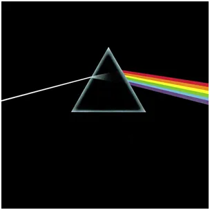
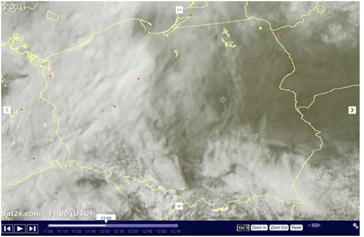
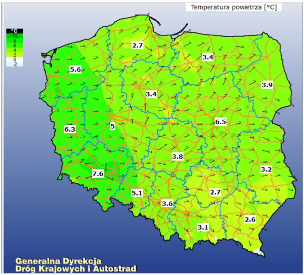
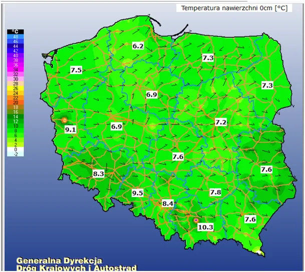

Ciało doskonale czarne i “kompletna ciemnota”.
Na wschodzie Polski dziś słonecznie i chłodno. Słońce z powodu swej wysokiej temperatury wysyła światło białe, czyli mieszankę promieni od czerwieni do fioletu. Jeśli coś jest białe, to znaczy, że odbija całe spektrum i taka wiązka w naszym oku tworzy obraz bieli. Gdy z Kosmosu widzimy niebieski ocean to znaczy, że z całej mieszanki kolorowych promieni woda zaabsorbowała wszystko prócz pasma niebieskiego. Zaabsorbowała znaczy tyle, co przejęła energię, różne substancje są w stanie przyjąć energię tylko z wybranych zakresów promieniowania. Zielony liść odbija zieleń a resztę pochłania, gdy go oświetlimy zielonym światłem to wszystko odbije i nic nie skorzysta energetycznie. Najpiękniejszym kolorem w fizyce jest czerń, choć czarnego światła jak na lekarstwo. Czerń bierze wszystko i nic nie oddaje. To czarna ziemia, asfalt itp. najszybciej się nagrzewają. Fizyka operuje pojęciem "ciało doskonale czarne" to takie, które nic nie odbija i wszystko zamienia w ciepło .

Jeszcze inna kategoria to przeźroczystość. Dla słonecznego światła powietrze jest przezroczyste. Promienie lecą sobie prosto jak strzała przez 100 km atmosfery, jakby jej nie było. W praktyce coś tam się dzieje, ale to są malutkie procenty energii i nie warto dziś o tym pisać. Chodzi o aerozole i gazy cieplarniane, ale to jest "pikuś" w bilansie termicznym planety. W ośrodku przezroczystym promienie nie wchodzą z powietrzem w żadne interakcje, nie przekazują energii, niosą ją do spotkania z czymś, co ma kolor. Warto jedynie pamiętać, że z góry wszystkie chmury są białe i skutecznie odbijają słoneczną energię bezpowrotnie w kosmos.

Cytując podręcznik z fizyki ziemi/meteorologii : "Promienie słoneczne nie nagrzewają bezpośrednio powietrza w troposferze. Najpierw rozgrzewane jest podłoże (grunt lub woda). Dopiero podłoże staje się źródłem długofalowego promieniowania cieplnego." Troposfera to obszar, gdzie żyjemy.
Nie trzeba wychodzić z domu, aby to potwierdzić. Teraz robimy poważny eksperyment badawczy na terenie całego kraju. Patrzymy na mapki, uwaga: skale kolorów nie są adekwatne, trzeba cyferki czytać. Mapki z dziś w południe. We wschodniej Polsce 3-4 stopnie, ale grunt i drogi w Słońcu mają ponad 7 st. Na zachodzie pod chmurami grunt minimalnie cieplejszy, bo światła dociera tam znacznie mniej przez zachmurzenie. Nie jest ciemno jak w nocy, ale nie ma bezpośredniej ekspozycji na Słońce. Na zachodzie grunt nagrzał się od ciepłego powietrza znad Atlantyku a na wschodzie od promieni Słońca przelatujących przez zimne powietrze.


Gdyby dzień był dłuższy emitowana z gruntu podczerwień nagrzałaby powietrze. Istotny udział w nagrzewaniu powietrza ma kontakt fizyczny z cieplejszymi przedmiotami. Czarny, bezlistny las jest taką grzałką na wiosnę, czarne skały i wszystko, co ma kolor, ale nie powietrze. Dziwi postawa wielu naukowców, że ignorują podstawy i "dekarbonizują", ale po "plandemi" nie powinno to dziwić.
Osobiście cieszę się bardzo, że Prąd Zatokowy tak nas podgrzewa kosztem tropików, przy tych cenach energii to zawsze +"tona wyngla" mniej. W Kanadzie, gdzie mają zimny prąd oceaniczny z północy na szerokości analogicznej do Budapesztu rzeka św. Wawrzyńca zamarza do marca, zamarza w sensie lodu przybywa!
Paweł Klimczewski